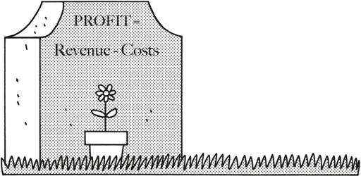
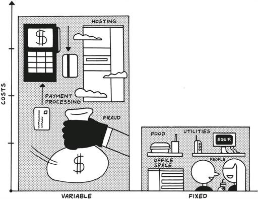
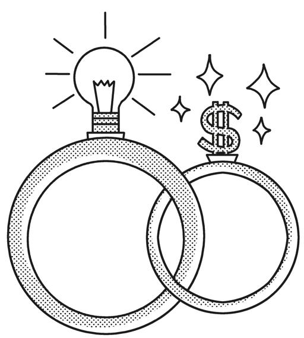
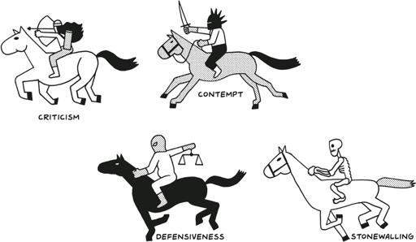

In this chapter, we’re going to talk about what comes after you’re profitable and have an organically growing customer base. For some of you, this will be relevant right this second, but even if you’re not there yet, don’t skip over this part. It will save you a lot of heartbreak if you can start thinking now about how to grow sustainably while avoiding some of the most common mistakes founders make.
在本章中，我们将讨论在您盈利并拥有自然增长的客户群之后会发生什么。对于你们中的一些人来说，这将立即相关，但即使你还没有到达那一步，也不要跳过这一部分。如果您现在就开始考虑如何可持续地增长，同时避免一些创始人最常犯的错误，这将为您省去很多麻烦。
You may be earning a nice living for yourself and your family, and in theory, your journey and the journey of your company could be coming to a close. But for many, including me, the point is not to create a lifestyle business, retire on a beach somewhere, and be done with it. The reasons to grow are different for every founder. Even though I got comfortable with the non-unicorn outcome for Gumroad in 2019, I’ve continued to invest in its growth. For one, it’s fun and satisfying to work on a continuously improving project. Two, it feels good to find new ways to create value for our creators.
您可能正在为自己和家人赚取不错的收入，理论上，您的旅程和公司的旅程可能即将结束。但对于包括我在内的许多人来说，重点不是创建一个生活方式的企业，退休后在某个海滩上度过余生。每位创始人都有不同的成长理由。尽管我在 2019 年对 Gumroad 的非独角兽结果感到满意，但我仍然继续投资于它的增长。首先，参与一个不断改进的项目是有趣且令人满意的。其次，找到新的方法为我们的创作者创造价值感觉很好。
And frankly, staying put doesn’t work. The world is constantly changing, and we and our businesses have to change with it. Staying put is a great way to start going backwards. You don’t need to grow like crazy, but you also don’t want to grow stagnant.
坦率地说，原地不动是行不通的。世界在不断变化，我们和我们的企业也必须随之改变。原地不动是开始倒退的好方法。你不需要疯狂地增长，但也不想停滞不前。
I’ve seen this play out at many companies. They solve the problem, get complacent, and over the years their customers churn and the people they hire are no longer fired up. But being a minimalist entrepreneur isn’t just about owning a business that doesn’t own you; it’s also about owning a business that you want to work on, even if you don’t have to work on it anymore.
我在许多公司都见过这种情况。他们解决了问题，变得自满，随着时间的推移，他们的客户流失，他们雇用的人也不再充满激情。但成为极简主义企业家不仅仅是拥有一个不束缚你的企业；还意味着拥有一个即使不再需要你工作，你也愿意继续投入的企业。
At this stage, the real question is: How can I grow with intent, without jeopardizing the impact I make for my customers or damaging the life I’ve built? On the surface, it might seem straightforward to stay the course when you start to see results, but slow, sustained growth is its own kind of challenge that requires deliberate, conscious decision making.
在这个阶段，真正的问题是：我如何有意图地成长，而不危及我为客户带来的影响或破坏我所建立的生活？表面上看，当你开始看到结果时，坚持原路似乎很简单，但缓慢而持续的增长是一种需要深思熟虑和有意识决策的挑战。
When businesses fail, it’s unlikely that a tornado of unforeseeable misfortunes is the cause. Instead, it’s usually one or more of the same handful of mistakes: overspending on inventory and office space, hiring too quickly, cofounder infighting. I’ll talk about how to avoid those mistakes, but also about how to deal with them because it’s likely that some of them will happen to you, even if you try to avoid them.
当企业失败时，通常不是因为一场不可预见的不幸龙卷风。相反，通常是因为同样的几个错误之一或多个：在库存和办公空间上过度支出、过快招聘、联合创始人内斗。我将讨论如何避免这些错误，但也会谈到如何应对它们，因为即使你努力避免，还是有可能会遇到其中的一些。
There are two categories of self-inflicted mistakes, or “unforced errors,” to watch out for. The first set relates to running out of money, and the second set to running out of energy.
有两类自我造成的错误，或称“非受迫性错误”，需要注意。第一类与资金耗尽有关，第二类与精力耗尽有关。
Let’s start with some basic economics and go from there.
让我们从一些基本的经济学开始，然后再深入探讨。
Don’t Spend Money You Don’t Have
不要花你没有的钱。
The most important equation in business: profit equals revenue minus costs.
商业中最重要的公式：利润等于收入减去成本。

It sounds so simple: Make more than you spend, and your company can keep on going forever. Make less than you spend, and you will eventually fail.
听起来很简单：赚得比花得多，你的公司就能永续经营。赚得比花得少，最终你将失败。
But you’d be surprised how often founders ignore profitability (read: sustainability) and focus on product development, growing, hiring, and all kinds of other things, right up until the money runs out. Paul Graham, founder of Y Combinator, can size up a company immediately based on whether they’re “default alive or default dead.” If expenses and revenues stay constant, will the company live or die? Incredibly, half of the founders he talks to have no idea.
但你会惊讶于创始人们经常忽视盈利能力（即可持续性），而专注于产品开发、增长、招聘以及其他各种事情，直到资金耗尽。Y Combinator 的创始人保罗·格雷厄姆可以立即判断出一家公司是“默认存活”还是“默认死亡”。如果支出和收入保持不变，公司是会存活还是会消亡？令人难以置信的是，他谈过的一半创始人对此毫无头绪。
In Graham’s experience, the founders don’t know because they don’t think they need to know. They’re counting on investors to swoop in and save them if things go south. But if you’re bootstrapping your company, you have to watch your own balance sheet because there’s no one coming to save you from your own mistakes.
在格雷厄姆的经验中，创始人不知道是因为他们认为自己不需要知道。他们指望投资者在情况恶化时出手相救。但如果你是自筹资金创办公司，你必须关注自己的资产负债表，因为没有人会来拯救你免于自己的错误。
Let me state the obvious. You should already have revenue coming in from the hundred customers you sold to, plus however many you have acquired via the marketing methods I covered in the previous chapter. So if you’re profitable now, you should be able to keep it that way by focusing on the only part of the equation left to discuss: costs.
让我说个显而易见的事情。你应该已经从你销售给的一百个客户那里获得了收入，加上你通过我在上一章中介绍的营销方法获得的客户。因此，如果你现在是盈利的，你应该能够通过专注于方程式中唯一剩下的部分：成本，来保持这种状态。
There are two kinds of costs. The first is variable cost, also referred to as the “cost of goods sold,” or COGS: the cost associated with selling each marginal unit of product. In brick-and-mortar businesses, that includes costs like labor, packaging, raw materials, and more. For software businesses in the 1990s, COGS were non-zero because software was put onto CDs and sold in retail stores.
成本有两种。第一种是可变成本，也称为“销售成本”或 COGS：与销售每个边际产品单位相关的成本。在实体店业务中，这包括劳动力、包装、原材料等成本。对于 1990 年代的软件企业，COGS 并非为零，因为软件是放在 CD 上并在零售店销售的。
Things have changed a lot since then. “Shipping” some electrons over the internet is virtually free, and the internet makes it much cheaper to collect payments online. For example, for each dollar we earn at Gumroad, we incur about 40 cents of variable costs. This 40 percent consists of payment processing fees, web hosting costs, other infrastructure costs, and fraud prevention (a necessary evil of helping people transact online).
自那时以来，情况发生了很大变化。通过互联网“传输”一些电子几乎是免费的，互联网使在线收款变得便宜得多。例如，在 Gumroad，我们每赚一美元，就会产生大约 40 美分的可变成本。这 40%包括支付处理费、网络托管成本、其他基础设施成本和欺诈预防（帮助人们在线交易的必要之恶）。
That leaves us 60 cents per dollar. But that 60 cents isn’t pure profit—we still need to pay the second kind of costs, fixed costs, which don’t scale linearly with our revenue and each incremental product sold. This includes everything from our domain name to certain online services, but these aren’t the main expenditures for us or for most businesses, minimalist or not. The number one fixed cost is people.
这让我们每美元剩下 60 美分。但这 60 美分并不是纯利润——我们仍然需要支付第二种成本，即固定成本，这些成本不会随着我们的收入和每增加的产品线性增长。这包括从我们的域名到某些在线服务的所有费用，但这些并不是我们或大多数企业的主要支出，无论是否极简。第一大固定成本是人。

In the next chapter, we’ll talk more about what it means to bring human beings into your company, but for now, let’s just say that employees, their equipment, the office space they need, the internet connection, the insurance for the space, the snacks in the fridge, the electricity, and so on, cost a lot of money, and rightfully so. Starting with you, so . . .
在下一章中，我们将更多地讨论将人引入公司意味着什么，但现在，我们只需说员工、他们的设备、他们需要的办公空间、互联网连接、空间的保险、冰箱里的零食、电费等等，都是很大的开销，而且理应如此。从你开始，所以……
Pay yourself as little as possible, at least to start. You are a founder, but you are also the first employee. Treat yourself as such. Don’t expect to take dividends. Instead, pay yourself an annual salary even if it is just $1, and then increase it over time as you can afford to. This will force you to do the work to get your systems set up so you can have an accurate picture of how much or how little is required to run your business, not just sell your product.
刚开始时，尽量少给自己发工资。你是创始人，但你也是第一个员工。要以这样的身份对待自己。不要指望分红。相反，即使只是一美元，也要给自己发年薪，然后随着你能负担得起的情况下逐步增加。这将迫使你做好工作，建立系统，以便你能准确了解经营业务所需的成本，而不仅仅是销售产品。
If you’re worried about making a living, I get it. That’s why I’ve recommended again and again that you start your business as a side project and use your time, energy, and ideas to grow the business to profitability before you leave your day job. Then, you can pay yourself as profits allow. In my case, when Gumroad started to work, I paid myself $36K a year, just enough to cover basic living expenses in San Francisco. Over the years, I increased my salary but tied it to the salary of the lowest-paid person at the company: $60K, then $85K. When things went sideways in 2015, I paid myself $0 for a while. Now I pay myself $120K a year.
如果你担心生计问题，我理解。这就是为什么我一再建议你把业务作为副业开始，利用你的时间、精力和创意在离开日常工作之前将业务发展到盈利阶段。然后，你可以根据利润给自己发工资。就我而言，当 Gumroad 开始运作时，我给自己发了每年 36,000 美元的工资，刚好够支付在旧金山的基本生活费用。多年来，我增加了工资，但将其与公司最低工资员工的工资挂钩：60,000 美元，然后是 85,000 美元。2015 年情况不佳时，我一度给自己发 0 工资。现在我每年给自己发 120,000 美元。
Ultimately, you should be trying to minimize your business’s burn, but also remember that the goal here is to provide yourself enough of an income to be able to focus on what matters: helping your customers solve their problems.
最终，你应该努力减少企业的消耗，但也要记住，这里的目标是为自己提供足够的收入，以便专注于重要的事情：帮助客户解决他们的问题。
Hire software, not humans. People are expensive. Software is not, usually because a lot of it is VC-subsidized in the name of growth. Take advantage of this by using Pilot or Bench instead of hiring an accountant or a CFO. Use Gusto to run payroll and benefits in five minutes. Because you are putting off hiring, you will also save money on all of the people-managing roles in your company, like an HR person and an office manager (see below). You may be surprised how far you can get with cheap software tools. For example, you can hire a human being to follow up with new customers every time someone signs up for your service or you can use automation tools like Zapier to send a follow-up email and to add those new customers to a queue to call later.
雇佣软件，而不是人力。人力成本高昂。软件通常不贵，因为很多软件是由风险投资补贴的，以促进增长。利用这一点，使用 Pilot 或 Bench，而不是雇佣会计或首席财务官。使用 Gusto 在五分钟内运行工资和福利。因为你推迟了招聘，你还将节省公司中所有人力管理角色的费用，比如人力资源人员和办公室经理（见下文）。你可能会惊讶于廉价软件工具能带你走多远。例如，你可以雇佣一个人来跟进每次有新客户注册你的服务，或者你可以使用像 Zapier 这样的自动化工具发送跟进电子邮件，并将这些新客户添加到稍后联系的队列中。
Don’t get an office. I believed this pre-pandemic, and I, and millions of other people who weren’t already convinced, believe it now. An office creates an insane amount of associated costs. Plus, you now have to manage an office. Unless you really need one, avoid it. (You can get one later if you really want it as a reward for building a meaningful, sustainable business.)
不要租办公室。我在疫情前就相信这一点，现在我和其他数百万原本不相信的人都相信了。办公室会带来大量相关成本。而且，你还得管理一个办公室。除非你真的需要，否则尽量避免。（如果你真的想要，可以在建立一个有意义、可持续的业务后作为奖励再考虑租一个。）
Thanks to the pandemic, there’s a list of businesses a mile long that have become “digital by default,” as Shopify founder and CEO Tobi Lutke put it, but others, like Upwork, have always thrived with distributed teams. Either way, even giants like Google, Microsoft, Morgan Stanley, JPMorgan, Capital One, Zillow, Slack, Amazon, PayPal, Salesforce, and other major companies have extended their work-from-home options post-2020, so if they don’t need an office, you probably don’t either.
多亏了疫情，正如 Shopify 创始人兼 CEO Tobi Lutke 所说，有一长串企业已经成为“默认数字化”，但像 Upwork 这样的公司一直以来都依靠分布式团队蓬勃发展。无论哪种方式，即使是像谷歌、微软、摩根士丹利、摩根大通、第一资本、Zillow、Slack、亚马逊、PayPal、Salesforce 等大公司在 2020 年后也延长了居家办公选项，所以如果他们不需要办公室，你可能也不需要。
Don’t move to Silicon Valley. Even before 2020, I would have said, “Don’t quit your job, don’t move to SF, don’t pass go, and don’t collect $200 (from VCs).” After all, San Francisco is expensive, traffic-heavy, and not a great place to raise your children—or even a dog. Now, post-COVID, remote work is the new normal, and that means you can stay where you are. Sam Altman, the former CEO of Y Combinator, said that he was “very excited to see SF have to compete with other cities.” Me too. Not only is it cheaper and less competitive to build your company in a smaller town or city, but it’s also better for the local community, which as we’ve learned can pay dividends for your business.
不要搬到硅谷。即使在 2020 年之前，我也会说：“不要辞职，不要搬到旧金山，不要通过起点，不要从风投那里拿到 200 美元。” 毕竟，旧金山昂贵、交通拥堵，不是养育孩子甚至是狗的好地方。现在，后疫情时代，远程工作已成为新常态，这意味着你可以留在原地。Y Combinator 的前 CEO Sam Altman 说，他“非常期待看到旧金山不得不与其他城市竞争。” 我也是。在较小的城镇或城市建立公司不仅更便宜、竞争更小，而且对当地社区更有利，而我们已经了解到，这可以为你的业务带来回报。
Outsource everything. It’s all you, every day. For now. Then it’s software. Eventually you and your army of robots will be at maximum capacity and you’ll need help. But before you hire your first full-time employee, use freelancers. I’m not talking about exploiting good, hardworking people by paying them less than they deserve. I mean hiring future founders and other potential minimalist entrepreneurs: offering them opportunities to learn within a functional, profitable business; paying them well; and giving them a chance to earn money while spending the rest of their time as they like—maybe even starting their own minimalist businesses themselves.
外包一切。现在一切都由你来做，每天如此。暂时如此。然后是软件。最终，你和你的机器人军团将达到最大容量，你将需要帮助。但在你雇佣第一个全职员工之前，先使用自由职业者。我不是在说通过支付低于他们应得的报酬来剥削那些勤奋工作的人。我是指雇佣未来的创始人和其他潜在的极简主义企业家：为他们提供在一个功能正常、盈利的企业中学习的机会；给予他们良好的报酬；并让他们有机会在其余时间自由支配，甚至可能自己创办极简主义企业。
If you can use these tactics to keep your costs lower than your revenues, your business shouldn’t die. Even better, you’ll have something worth keeping: a profitable, sustainable, growing business serving customers. It’s no longer up to the market to decide if what you built was valuable. It’s now up to you not to lose it.
如果你能利用这些策略使成本低于收入，你的企业就不应该倒闭。更好的是，你将拥有值得保留的东西：一个盈利的、可持续的、不断发展的企业，为客户服务。市场不再决定你所建造的东西是否有价值。现在由你来确保不失去它。
(This may seem overwhelming. To help, in the “Learn More” resources at the end of this chapter, I included Gumroad’s actual P&L with all of our costs, as well as simpler examples.)
（这可能看起来让人不知所措。为了帮助你，在本章末尾的“了解更多”资源中，我包含了 Gumroad 的实际损益表以及我们所有的成本，还有更简单的例子。）
In the last chapter, I described how the Doans used YouTube to grow the Missouri Star Quilt Company from a struggling mom-and-pop machine quilting shop to a global quilting empire. Looking back, the success of Missouri Star might feel like a foregone conclusion, but it wasn’t obvious at the start that the company would succeed, or even survive. “It took four years before we were profitable and could begin to pay our own salaries,” Al Doan said. “We were doing everything ourselves, including renovating the buildings we bought, as we slowly figured out what worked both for our customers and for the company itself.”
在上一章中，我描述了 Doan 家族如何利用 YouTube 将 Missouri Star Quilt Company 从一家挣扎中的夫妻经营的机器缝纫店发展为全球缝纫帝国。回顾过去，Missouri Star 的成功似乎是理所当然的，但在一开始，公司是否会成功，甚至能否生存下去，并不明显。Al Doan 说：“我们花了四年时间才盈利，并开始支付自己的薪水。我们自己做所有事情，包括翻新我们购买的建筑物，同时慢慢摸索出什么对我们的客户和公司本身有效。”
The good news for Missouri Star was that in Hamilton, Missouri, it was much easier to keep costs lower than it would have been in Silicon Valley or another market with expensive labor and real estate. “We started with a five-thousand-square-foot store that we thought would last us forever,” Al said, but they eventually had to separate the company’s inventory into multiple shops where they could house specialized fabrics, notions, and trim. As Missouri Star expanded, the “retail warehousing model”—in which the people who worked in the physical stores also fulfilled online orders—started to break down as employees could no longer simultaneously handle in-person and online sales.
对于密苏里星公司来说，好消息是，在密苏里州的汉密尔顿，比在硅谷或其他劳动力和房地产昂贵的市场更容易保持较低的成本。阿尔说：“我们开始时有一个五千平方英尺的商店，我们以为可以永远使用下去。”但最终他们不得不将公司的库存分成多个商店，以便存放专用的面料、缝纫用品和装饰品。随着密苏里星的扩展，“零售仓储模式”——即在实体店工作的员工也负责在线订单的履行——开始崩溃，因为员工无法同时处理面对面和在线销售。
The solution was obvious but also scary: To meet customer demand, Missouri Star would have to separate its retail business from its online one, which meant new warehouses, increased inventory, and more employees. As minimalist entrepreneurs, Al and his family were concerned about a radical increase in the company’s variable costs, but because Missouri Star was already profitable and its revenues were growing year-over-year, they had the confidence (and the money) to support their expansion.
解决方案显而易见但也令人恐惧：为了满足客户需求，密苏里星必须将其零售业务与在线业务分开，这意味着需要新的仓库、增加库存和更多员工。作为极简主义企业家，阿尔和他的家人对公司可变成本的急剧增加感到担忧，但由于密苏里星已经盈利且收入逐年增长，他们有信心（也有资金）支持他们的扩张。
Al also had enough experience to know that avoiding growth and trying to maintain dysfunctional systems wasn’t a good idea. “We didn’t hire a human resources person until we were at 150 employees,” he said, because it felt wasteful to pay someone to perform a function he’d done for years, “even if [he’d] done it badly.” It took a few incidents and some intervention from a friend with an HR background for him to realize that investing in HR would be worth the cost. “Otherwise,” he says, “you end up with several eight-hour jobs.”
Al 也有足够的经验知道，避免成长并试图维持功能失调的系统不是一个好主意。他说：“我们直到有 150 名员工时才雇佣人力资源人员，”因为支付一个人来执行他多年来一直在做的工作感觉很浪费，“即使[他]做得不好。”经过几次事件和一位有人力资源背景的朋友的干预，他才意识到投资人力资源是值得的。“否则，”他说，“你最终会有几个八小时的工作。”
Beyond what the business has meant for the Doan family, Missouri Star Quilt Company has transformed the small town where it’s headquartered. When asked about the impact on the community in 2019, Jenny Doan said that at first, “I thought we were just sewing,” but now they employ four hundred people. In addition to growing Missouri Star, they’ve also started a sewing company, a knitting company, and an art company. “We have more ideas than we have buildings at this point,” Jenny says.
除了对 Doan 家族的意义之外，密苏里星被子公司还改变了其总部所在的小镇。2019 年，当被问及对社区的影响时，Jenny Doan 说，起初，“我以为我们只是在缝纫，”但现在他们雇佣了四百人。除了发展密苏里星，他们还创办了一家缝纫公司、一家针织公司和一家艺术公司。“我们现在的想法比建筑物还多，”Jenny 说。
The Doans’ story offers many different lessons for minimalist entrepreneurs. Even if it’s the goal, growth is its own challenge. Far too often, companies with plenty of talent and market potential run into trouble not because of the product or the customers but because of the unglamorous but essential parts of running the business: Operations. Finances. Human Resources. Legal. In the world of VC, where millions of dollars are thrown around on wild bets, people tend to be over-exuberant, lavishing generous perks like pool tables and free food.
Doan 家的故事为极简主义企业家提供了许多不同的教训。即使增长是目标，它本身也是一种挑战。太多时候，拥有大量人才和市场潜力的公司遇到麻烦，不是因为产品或客户，而是因为经营业务中那些不光鲜但至关重要的部分：运营、财务、人力资源、法律。在风险投资的世界里，数百万美元被用于疯狂的赌注，人们往往过于兴奋，慷慨地提供台球桌和免费食物等福利。
Don’t get swept up in what a “successful” business is supposed to look like. Keep doing what’s working, stop or improve the processes that aren’t, and always, always, always keep an eye on the numbers and your ears on your customers.
不要被所谓“成功”企业的样子所迷惑。继续做有效的事情，停止或改进无效的流程，并始终关注数字和倾听客户的声音。
Stay Focused on What Your Customers Want
专注于客户的需求
The tuning fork you should resort to over and over again is quite simple: your customers.
你应该一再依赖的调音叉非常简单：你的客户。
Your customers do not want you to get bigger and grow faster. They do not care how rich you are, if you were on the Forbes “30 Under 30” list, which venture capitalists you raised money from, or how many employees you have. They want your product to improve, and your business to stick around. That’s about it.
你的客户并不希望你变得更大、更快。他们不关心你有多富有，是否上过福布斯“30 岁以下 30 人”榜单，从哪些风险投资家那里筹集了资金，或者你有多少员工。他们希望你的产品有所改进，并希望你的业务能够持续下去。仅此而已。
Amazon has a nice way of thinking about this: “In every board meeting in Amazon HQ stands an empty chair. That seat represents the customer and the customer voice. So everything that is developed and created is scrutinized by the voice of the customer. That voice is what the people in the meeting room ask as if they were in the place and shoes of the customer. Why is this product important for me, what value does it bring, do we really need this service or product?”
亚马逊对此有一个很好的思考方式：“在亚马逊总部的每次董事会议上都有一把空椅子。那把椅子代表着客户和客户的声音。因此，所有开发和创造的东西都要经过客户声音的审视。会议室里的人们就像站在客户的立场和角度一样，问自己：为什么这个产品对我重要，它带来了什么价值，我们真的需要这个服务或产品吗？”
Even though we’re not trying to build Amazons, this attitude is even more important if you are at the helm of a newly profitable and growing minimalist business. As an African American father of six children, Jelani Memory, founder of Circle Media and A Kids Book About, inevitably found himself discussing racism at the table with his blended family of four white and two brown kids. Memory decided to write a book for his own children, one that would describe his experience with racism in terms they could understand.
尽管我们并不打算建立像亚马逊那样的公司，但如果你正处于一家新盈利且不断增长的极简主义企业的领导位置，这种态度就显得尤为重要。作为一位有六个孩子的非裔美国父亲，Circle Media 和 A Kids Book About 的创始人 Jelani Memory，不可避免地会在餐桌上与他由四个白人孩子和两个棕色孩子组成的混合家庭讨论种族主义。Memory 决定为自己的孩子写一本书，用他们能理解的语言描述他对种族主义的经历。
The book, A Kids Book About Racism, was simple, with no illustrations. He proudly designed and printed one copy; it took four weeks to produce. It gave him a jumping-off point for discussing hard things with his own children, and when he showed it proudly to other friends and parents, many wanted a copy for their families. Even though he was in the midst of raising Series B for Circle Media, the idea of starting a publishing company had taken hold of him. By January 2019, he negotiated an exit.
这本书《A Kids Book About Racism》很简单，没有插图。他自豪地设计并印刷了一本，花了四周时间制作。这本书为他与自己的孩子讨论困难话题提供了一个起点，当他自豪地向其他朋友和家长展示时，许多人都想为他们的家庭得到一本。尽管他正忙于为 Circle Media 筹集 B 轮融资，但创办一家出版公司的想法已经在他心中扎根。到 2019 年 1 月，他谈妥了退出事宜。
At that point, he started to tell everyone he knew about his ideas for A Kids Book About—these were his potential early customers, after all—and seeing their reactions and feeling “the power of possibility in the look on people’s faces” not only helped him refine the business but also validated his bigger project of publishing kids’ books on challenging, empowering topics.
在那时，他开始向他认识的每个人讲述他关于《A Kids Book About》的想法——毕竟这些是他潜在的早期客户——看到他们的反应并感受到“人们脸上可能性的力量”不仅帮助他完善了业务，还验证了他出版关于具有挑战性和赋权主题的儿童书籍这一更大的项目。
That energy kept him going through early challenges, including learning about publishing in general and figuring out how to manage inventory. He launched A Kids Book About in October 2019 with twelve titles, and it grew steadily but modestly until May 2020. The day after George Floyd was killed by police on May 25, 2020, “A Kids Book About did as much in sales as it had the whole previous month. And it didn’t slow down,” Memory said. “The following day, sales went up 2x, and the day after, went up another 2x and held steady. So, within the span of 10 days, A Kids Book About saw north of $1 million in revenue.” Their inventory was supposed to last the rest of the year, but they sold out of every single one of their titles but two.
这种能量让他在早期的挑战中坚持下来，包括学习出版业的基本知识和如何管理库存。他于 2019 年 10 月推出了《A Kids Book About》，最初有十二个标题，并稳步但适度地增长，直到 2020 年 5 月。2020 年 5 月 25 日乔治·弗洛伊德被警察杀害后的第二天，“《A Kids Book About》的销售额与前一个月的总和相当。而且它没有放缓，”Memory 说。“接下来的那天，销售额翻了一番，再接下来的那天又翻了一番并保持稳定。因此，在 10 天内，《A Kids Book About》的收入超过了 100 万美元。”他们的库存本应维持到年底，但他们的所有书籍都卖光了，只剩下两本。
Those sales figures validated Memory’s belief in the product he was offering and in the possibility for growth within a changing world. He says, “There is a misconception that money or investment confers validation and permission to do things in conventional and expensive ways, but that’s not true. It’s about product, revenue, and traction. Most of all, customer affection is the permission you need to grow.”
那些销售数据验证了 Memory 对他所提供产品的信心，以及在不断变化的世界中增长的可能性。他说：“有一种误解认为金钱或投资赋予了以传统和昂贵方式行事的验证和许可，但事实并非如此。关键在于产品、收入和发展。最重要的是，客户的喜爱是你需要的增长许可。”
If you stay focused on what drives sales and what excites your customers, then you’ll know how to grow; they’ll tell you. And if you pay attention as you go, even as you do unwittingly make unforced errors, it will be your customers (or the lack thereof) who will show you how to get back on track, far before you would have otherwise noticed.
如果你专注于推动销售的因素和让客户兴奋的事情，那么你就会知道如何增长；他们会告诉你。而且如果你在前进的过程中注意观察，即使你无意中犯了不必要的错误，也会是你的客户（或缺乏客户）在你意识到之前很久就会告诉你如何重回正轨。
Finally, be diligent about the essentials. It’s easy to excuse sloppy practices when you’re growing and feel overwhelmed, but that’s the moment when you need to be most disciplined about how you spend your time and money. Not just because of the implications for your bottom line but also because nothing brings a business to a screeching halt faster than a legal problem or a break in the supply chain.
最后，要对基本要素保持勤勉。当你在增长并感到不堪重负时，很容易为草率的做法找借口，但这正是你需要对时间和金钱的使用保持最严格纪律的时候。不仅因为这对你的底线有影响，还因为没有什么比法律问题或供应链中断更能让业务戛然而止。
Paychecks need to go out on time, and it’s on you to avoid any legal, financial, or operational complications that might sink the ship. Vendors need to be registered in the system and paid promptly. IT security needs to be buttoned up tight, particularly around user privacy. You need to run a good, clean business to establish and uphold your reputation with employees, vendors, and customers. Chances are, however, that one or more of these areas lies outside your area of experience. You probably lack even the basic knowledge to hire the right help. That’s okay. We’ll talk more on hiring in the next chapter.
工资需要按时发放，避免任何可能导致公司陷入困境的法律、财务或运营问题是你的责任。供应商需要在系统中注册并及时付款。IT 安全需要严密，特别是在用户隐私方面。你需要经营一个良好、干净的业务，以建立和维护你在员工、供应商和客户中的声誉。然而，很可能这些领域中的一个或多个超出了你的经验范围。你可能甚至缺乏雇佣合适帮助的基本知识。没关系。我们将在下一章中详细讨论招聘。
Until then, good news: Your customers can connect you to people who can help, especially if you’re open with them about what you need. They’re already incentivized to support you, because they use your product and want to make it better. And there’s another way to get them even more involved with your success: turning them into owners.
在此之前，好消息是：你的客户可以将你与能够提供帮助的人联系起来，特别是当你对他们坦诚你的需求时。他们已经有动力支持你，因为他们使用你的产品并希望改进它。还有另一种方法可以让他们更深入地参与到你的成功中：将他们变成所有者。
Raise Money from Your Community
从你的社区筹集资金
Growing businesses, even minimalist businesses, may need capital at some point. Raising money can make sense, once you know how you would spend it to improve the lives of the customers you already have. Shopify, for example, and 1Password raised money several years into their lives. Because they were both profitable when they did it, they were able to keep their visions aligned and their dilution low, and retain control of their companies.
成长中的企业，即使是极简主义的企业，可能在某个时候需要资金。筹集资金是有意义的，前提是你知道如何利用这些资金来改善现有客户的生活。例如，Shopify 和 1Password 在成立几年后筹集了资金。因为他们在筹资时已经盈利，所以能够保持愿景一致，稀释程度低，并保留对公司的控制权。
If you do choose to go the venture capital route (Hit me up! shl.vc), profitability will give you leverage in those negotiations. But there are also new ways to raise money, ones that preserve your ownership and empower your customers.
如果你选择走风险投资的路线（联系我！shl.vc），盈利能力将在谈判中为你提供杠杆。但也有新的筹资方式，可以保留你的所有权并赋予客户权力。
I don’t just mean new venture capital funds such as Calm Company Fund (disclosure: I am an investor), and Tinyseed Fund, which are looking to invest in more sustainable, perhaps minimalist, businesses. These firms are building a portfolio with a higher hit rate, allowing them not to overoptimize for finding the single company that returns their whole fund. But they are far from the norm.
我不仅指新的风险投资基金，如 Calm Company Fund（披露：我是投资者）和 Tinyseed Fund，这些基金正在寻找投资于更可持续的，或许是极简主义的企业。这些公司正在建立一个命中率更高的投资组合，使他们不必过度优化以寻找能回报整个基金的单一公司。但它们远非常态。
What I am mostly talking about here is a totally new way to raise money from your customers and your communities: Regulation Crowdfunding.
我在这里主要谈论的是一种全新的方式，从您的客户和社区中筹集资金：法规众筹。
In 2012, President Obama signed the JOBS Act into law. This bill, among many other things, included the ability for private companies like Gumroad to sell shares to the general public, making it possible for almost anyone to invest in the business. On March 15, 2021, the legal limit for regulation crowdfunding went from $1.07 million to $5 million. These new rules also allow for “testing the waters,” allowing companies like Gumroad to see how much demand there is to invest in the company before committing to a crowdfunding campaign.
2012 年，奥巴马总统签署了《就业法案》成为法律。该法案包括许多其他内容，使像 Gumroad 这样的私人公司能够向公众出售股份，使几乎任何人都可以投资于该业务。2021 年 3 月 15 日，法规众筹的法律上限从 107 万美元提高到 500 万美元。这些新规则还允许“试水”，让像 Gumroad 这样的公司在承诺进行众筹活动之前，了解投资公司需求的大小。
I believe that crowdfunding will reorganize the funding landscape. There will always be a place for venture capitalists, but who better to fund a business than its customers, who understand how valuable its offering is? And once founders can vet demand before committing, we should see the numbers skyrocket.
我相信众筹将重组融资格局。风险投资家总会有一席之地，但谁比了解其产品价值的客户更适合为企业提供资金呢？一旦创始人能够在承诺之前评估需求，我们应该会看到数字飙升。
In the old way, the number one downside of raising money was that you created two distinct sets of stakeholders: your investors and your customers. This new practice will allow entrepreneurs to minimize complexity by turning customers into investors. All of a sudden, you have a single group of people you are serving: your community.
传统方式中，筹集资金的最大缺点是你会创造出两组不同的利益相关者：投资者和客户。这种新做法将允许企业家通过将客户转变为投资者来简化复杂性。突然之间，你只需服务一个群体：你的社区。
I can speak from experience: On March 15, 2021, I used Regulation Crowdfunding to allow some of Gumroad’s creators to become part-owners. In 12 hours, we raised $5 million from more than 7,000 individual investors. Now we have thousands of our creators as our investors too, keeping our interests more cleanly aligned.
我可以从经验中说：在 2021 年 3 月 15 日，我使用了众筹法规，让一些 Gumroad 的创作者成为部分所有者。在 12 小时内，我们从超过 7,000 名个人投资者那里筹集了 500 万美元。现在，我们有成千上万的创作者也是我们的投资者，使我们的利益更加清晰地保持一致。
For the businesses that neither need to bootstrap completely nor want to go the venture-backed path, I’m hopeful that Regulation Crowdfunding will offer a middle ground. But the ultimate long-term goal remains profitability (read: sustainability). Once you’re in control of your destiny, you should never let it go.
对于那些既不需要完全自筹资金也不想走风险投资路线的企业，我希望众筹法规能提供一个中间地带。但最终的长期目标仍然是盈利（即：可持续性）。一旦你掌控了自己的命运，就不应该放手。
Build Profitable Confidence
建立盈利的信心
I know I’ve said over and over again that profitability is the metric that matters most to your business. That’s because profitability is a superpower. If you rely on VCs for capital, like we did in the early days, you rely on outside forces to be successful. When they pull the plug, you have no more electricity. Your backup generator will last a certain amount of time, then run out too.
我知道我一再强调，盈利是对您的业务最重要的指标。这是因为盈利是一种超能力。如果您像我们早期一样依赖风险投资来获取资金，那么您就依赖外部力量来取得成功。当他们拔掉插头时，您就没有电了。您的备用发电机将持续一段时间，然后也会耗尽。
Profitability gets you off the grid, allowing you to grow mindfully with unlimited runway. You can take your time and make thoughtful decisions that move you toward the right targets at your pace, not someone else’s. As some Navy SEALs say, “Slow is smooth and smooth is fast.”
盈利让您脱离电网，使您能够以无限的跑道谨慎地成长。您可以慢慢来，做出深思熟虑的决定，以自己的节奏而不是别人的节奏朝着正确的目标前进。正如一些海豹突击队员所说，“慢就是顺，顺就是快。”
Chris Savage, CEO and cofounder of Wistia, a video and podcast marketing platform, calls the resulting sense of conviction “profitable confidence.” In 2017, Savage and his cofounder, Brendan Schwartz, realized that their efforts to scale and grow quickly had not only made their work less creatively interesting, but had also made them unprofitable. By slowing down, they figured out how to trust their instincts again—and wound up more profitable than ever.
Wistia 的视频和播客营销平台的首席执行官兼联合创始人 Chris Savage 将由此产生的信念感称为“盈利信心”。2017 年，Savage 和他的联合创始人 Brendan Schwartz 意识到，他们快速扩张和增长的努力不仅使他们的工作在创意上变得不那么有趣，而且还使他们变得无利可图。通过放慢速度，他们重新找回了信任直觉的方法，并最终比以往任何时候都更有利可图。
For Wistia, being profitably confident means that Chris and Brendan know they will live no matter what they do. It allows them to pursue ideas at their own pace, and that frees them up so that every single thing doesn’t have to work immediately (or even at all). They don’t have to bet the company anymore if they want to try something new, and they can wait years for something to pay off.
对于 Wistia 来说，盈利的自信意味着 Chris 和 Brendan 知道无论他们做什么，他们都能生存。这让他们可以按照自己的节奏追求想法，并且这使他们不必让每件事情都立即（甚至根本）奏效。如果他们想尝试新事物，他们不再需要赌上公司，他们可以等待多年才能看到回报。
This feels great, because you can truly invest in the stuff that you think will create a lot of value for your customers, not just the stuff that will “move the needle” on your top-line growth metrics as soon as possible, so that you can raise the venture capital you need to keep going.
这感觉很棒，因为你可以真正投资于你认为会为客户创造大量价值的东西，而不仅仅是那些能尽快“推动”你顶线增长指标的东西，以便你能筹集到继续前进所需的风险资本。
When you are profitable, you can take your time. You can talk to customers and really make sure you understand their problems before you attempt to solve them. Then you can iterate on your solution over and over again until you’re really happy with it even if you take years to do it. You could even show customers and get their feedback again and again, like we often do.
当你盈利时，你可以慢慢来。你可以与客户交谈，真正确保在尝试解决问题之前理解他们的问题。然后你可以一遍又一遍地迭代你的解决方案，直到你对它非常满意，即使这需要几年时间。你甚至可以向客户展示并反复获得他们的反馈，就像我们经常做的那样。
Since you are running on your own steam, your runway will now last you forever. You will not die unless you do something stupid. This means you need to hire slowly, not ambitiously. You should also avoid irreversible decisions like getting a multiyear office lease. Moving slowly will mean you can ship more thoughtfully because you’ll have the time and space to learn about yourself, your customers, and your market. It will also give you a clear view of the road ahead. You will be able to detect bugs in your product and systems before they affect your customers. You can test your software in private beta with customers, or behind a waitlist. You can make sure it’s good enough before you give it a wide release. This way, your customers continue to appreciate every thoughtful addition—or subtraction—you make and to love your product without worrying about the mistakes that accompany quick changes and rash decisions.
由于你依靠自己的动力运行，你的跑道将永远持续下去。除非你做了愚蠢的事情，否则你不会失败。这意味着你需要慢慢招聘，而不是雄心勃勃。你还应该避免不可逆转的决定，比如签订多年期的办公室租约。慢慢前进意味着你可以更周到地发布产品，因为你将有时间和空间去了解自己、客户和市场。这也会让你对前方的道路有一个清晰的视野。你将能够在产品和系统中的错误影响到客户之前发现它们。你可以在私密测试版中与客户测试你的软件，或者在等待名单后面进行测试。你可以确保在广泛发布之前它已经足够好。这样，你的客户会继续欣赏你所做的每一个周到的增减，并且在不必担心快速变化和草率决定所带来的错误的情况下，继续热爱你的产品。
Overcommunicate with Your Cofounder
与联合创始人过度沟通
Once your business is too well run to fail, there’s one more failure point to address: you. Your business won’t run out of money, but you may still run out of energy.
一旦你的业务运行得太好而不会失败，还有一个失败点需要解决：你自己。你的业务不会耗尽资金，但你可能仍然会耗尽精力。
One of the fastest ways to drain your enthusiasm and to lose steam is a cofounder fight. According to Paul Graham, founder disagreements are par for the course, and 20 percent of those situations escalate until one founder departs the company.
让你的热情迅速消退并失去动力的最快方法之一就是与联合创始人发生争执。根据 Paul Graham 的说法，创始人之间的分歧是常见的，其中 20%的情况会升级到其中一位创始人离开公司的地步。

No one gets married expecting to divorce, and most cofounders don’t anticipate that things won’t work out either. But ultimately, relationships are relationships, and it can be useful to apply frameworks for personal relationships to professional ones if they apply.
没有人结婚时期待离婚，大多数联合创始人也没有预料到事情会不顺利。但最终，关系就是关系，如果适用，将个人关系的框架应用于职业关系可能会很有用。
Drs. John and Julie Gottman, well-known couples therapists, say they can predict the end of relationships using “The Four Horsemen of the Apocalypse,” their name for four types of communication styles that start to appear in a relationship: (1) criticism, (2) contempt, (3) defensiveness, and (4) stonewalling. While some founders succeed at tackling their conflicts head-on and eventually rediscover common purpose and mission, others never do, and one founder will move on.
著名的夫妻治疗师 John 和 Julie Gottman 博士表示，他们可以通过“末日四骑士”来预测关系的结束，这是他们对关系中开始出现的四种沟通风格的称呼：（1）批评，（2）蔑视，（3）防御，（4）冷漠。虽然有些创始人成功地正面解决了他们的冲突，并最终重新发现了共同的目标和使命，但其他人却没有做到，其中一位创始人将会离开。

In Startupland, this isn’t necessarily a bad thing. Startups are encouraged to “fail fast,” and founders often cycle through several teams at the same time they’re cycling through ideas.
在创业界，这不一定是坏事。创业公司被鼓励“快速失败”，创始人通常在不断尝试新想法的同时，也在不同的团队中轮换。
But there’s also a lot of truth when people say, “It’s harder to divorce your cofounder than your spouse,” so if you want to give your business the best chance at success, approach the relationship with your cofounder(s) like a marriage. Think about the following before you team up for the long haul:
但当人们说“与联合创始人离婚比与配偶离婚更难”时，这句话也有很多道理。因此，如果你想让你的企业有更大的成功机会，就要像对待婚姻一样对待与联合创始人的关系。在长期合作之前，请考虑以下几点：
Do not start a relationship with someone unless you really, really trust them.
除非你真的非常信任某人，否则不要与他们开始一段关系。
Do introduce vesting so that each of you earns your stock over several years.
确保引入归属机制，以便你们每个人在几年内逐步获得自己的股份。
Do make sure you are aligned on your values, what you want to build, and how you want to build it.
确保你们在价值观、想要建立的目标以及如何建立目标上保持一致。
Do not ignore the possibility that one of you may leave. Plan for what a successful exit from the business may look like.
不要忽视你们中的一个可能会离开的可能性。计划一下成功退出业务可能是什么样子。
Do have the hard conversations as early as you possibly can. Just like there’s no point in dating someone for five years before you figure out if they want what you want, early in any serious professional relationship, it is important to explore and understand each other’s values and ambitions. Because hard conversations get harder the longer you wait to have them. Here are some questions worth asking your potential partners:
尽可能早地进行艰难的对话。就像在约会五年后才发现对方是否想要和你一样的东西没有意义一样，在任何严肃的职业关系初期，探索和理解彼此的价值观和抱负是很重要的。因为拖得越久，艰难的对话就会变得越难。以下是一些值得问潜在合伙人的问题：
What does a happy relationship look like?
幸福的关系是什么样的？
What does success for this business look like?
这个业务的成功是什么样的？
What does an exit look like?
出口是什么样子的？
How fast do we want to grow?
我们希望增长的速度有多快？
Why are we starting this together?
为什么我们要一起开始这个？
Have these hard conversations again and again. Think about specific check-ins to reevaluate these goals so that disagreements don’t fester silently, and make sure that whatever path you plan on taking, you’re on the same page about it.
一次又一次地进行这些艰难的对话。考虑具体的检查点来重新评估这些目标，以免分歧在无声中滋生，并确保无论你计划走哪条路，你们对此都达成共识。
Maintain Your Energy and Sanity
保持你的精力和理智
The conventional wisdom is that there are two kinds of startup founders: On one end of the spectrum, you run a lifestyle business and lounge on the beach all day, and at the other, you work 24/7, only stopping to eat or sleep when absolutely necessary and sacrificing exercise, rest, family, the outdoors, and whatever in your life gives you pleasure and sustenance.
传统观点认为，创业者有两种类型：在光谱的一端，你经营一个生活方式的企业，整天在海滩上休闲；在另一端，你全天候工作，只在绝对必要时才吃饭或睡觉，牺牲锻炼、休息、家庭、户外活动以及生活中带给你快乐和滋养的一切。
There’s a lot of real estate between those two extremes, and just like your business needs to change and to grow to keep from getting stagnant, so do you as a human being. I’d be lying if I said that being a minimalist entrepreneur doesn’t take a lot of hard work, but it doesn’t have to be an all-or-nothing proposition.
在这两个极端之间有很多空间，就像你的业务需要改变和成长以避免停滞不前一样，作为一个人，你也需要这样。我若说成为一个极简主义企业家不需要大量的努力，那就是在撒谎，但这不必是一个全有或全无的命题。
I can speak from experience, as I’ve changed my mind about what I wanted out of Gumroad quite a few times. For the first several years of Gumroad’s life, I was chasing unicorns. Then I right-sized the business to profitability, and today it’s one of a few things I am working on, like this book. Generally, I don’t let my business make me too happy, so that it can’t make me too sad. But it took years for me to get here, and the kind of people who wanted to work on Gumroad at each phase were very different. I basically had to rebuild the whole team from scratch.
我可以从经验中说话，因为我对 Gumroad 的期望改变了好几次。在 Gumroad 的头几年里，我一直在追逐独角兽。然后我调整了业务规模以实现盈利，如今它是我正在从事的几件事情之一，比如这本书。一般来说，我不让我的业务让我太开心，这样它就不会让我太难过。但我花了多年时间才走到这一步，而在每个阶段想要在 Gumroad 工作的人都非常不同。我基本上不得不从头开始重建整个团队。
When you’re growing at all costs, it’s easy to avoid these conversations. It’s easy to justify not having them too: You’re all focused on growth, and these conversations aren’t helping you grow in the short term. But in the long term, as your business morphs like every business does, you need to have them. Or they’ll happen to you when you least expect them to, and that’s a lot less fun.
当你不惜一切代价增长时，很容易避免这些对话。也很容易为不进行这些对话找到理由：你们都专注于增长，而这些对话在短期内并不能帮助你们增长。但从长远来看，随着你的业务像每个业务一样发生变化，你需要进行这些对话。否则，它们会在你最意想不到的时候发生，那就不那么有趣了。
To be clear, this isn’t about scaling back your ambitions in order to make your business work. It’s about aligning the ambitions you have for yourself and your company with the ambitions your customers have for themselves. Because I’m not trying to build a billion-dollar business at all costs, my focus now is on creating more creators and business owners.
为了明确，这不是要缩减你的雄心以使你的业务运作。这是关于将你对自己和公司抱有的雄心与客户对他们自己的雄心对齐。因为我并不想不惜一切代价建立一个价值十亿美元的企业，我现在的重点是创造更多的创作者和企业主。
And frankly, you often can’t grow faster if you try. I’ve worked sixty hours a week for years on end, and I’ve worked four hours a week. For better or worse, Gumroad grew at its own pace, and the number of hours I worked didn’t seem to have much of a correlation. I think you’ll find the same is true for you: Your company will grow as quickly as your customers determine it will grow. For us, that was 15 percent in 2017, 25 percent in 2018, 40 percent in 2019, and 87 percent year-over-year in 2020.
坦率地说，如果你尝试，通常也无法更快地增长。我曾连续多年每周工作六十小时，也曾每周工作四小时。无论好坏，Gumroad 以自己的节奏增长，我工作的小时数似乎没有太大关联。我想你会发现同样的情况适用于你：你的公司将按照客户决定的速度增长。对我们来说，2017 年增长了 15%，2018 年增长了 25%，2019 年增长了 40%，2020 年同比增长了 87%。
It taught me to be wary of thinking I always needed to do more, earn more, or grow more than I needed to. Once I came to terms with the reality that I couldn’t control everything, it got a lot easier to move forward. Instead of pretending to be a product visionary and trying to build a billion-dollar company, as if it were within my control, I could focus on making Gumroad better for our existing creators.
它教会了我要警惕总是认为自己需要做得更多、赚得更多或成长得比我需要的更多。一旦我接受了无法控制一切的现实，前进就变得容易多了。与其假装自己是产品的远见者并试图建立一个十亿美元的公司，好像这在我的控制之中，我可以专注于为我们现有的创作者改进 Gumroad。
Some say that you need to grow like crazy, because “if you don’t get big, someone else will eat you.” As if companies were fish.
有人说你需要疯狂增长，因为“如果你不变大，别人就会吃掉你。”好像公司是鱼一样。
This is wrong. The vast majority of small businesses are never eaten. Big fish want to eat other big fish. In fact, the longest-lived businesses in the world are also some of the smallest. They are restaurants, hotels, construction companies, and more. Many of them are family firms, or small to midsize enterprises content with steady evolution of their niche and a passionate multigenerational customer base. Something to aspire to!
这是错误的。绝大多数小企业从未被吞并。大鱼想吃掉其他大鱼。事实上，世界上寿命最长的企业也是一些最小的企业。它们是餐馆、酒店、建筑公司等等。许多是家族企业，或是满足于其细分市场的稳定发展的中小型企业，并拥有热情的多代客户群。这是值得追求的目标！
Maybe you already know this. Maybe that’s the business you already aspire to build. If so, I’m glad. But it wasn’t obvious to me when I started out, and I see these ideologies pervade and persist in social media, within headlines, and on TV.
也许你已经知道这一点。也许这就是你已经渴望建立的业务。如果是这样，我很高兴。但当我刚开始时，这对我来说并不明显，我看到这些意识形态在社交媒体、头条新闻和电视中无处不在。
One more economics lesson to wrap up: There’s no free lunch. Once you have it, you will feel the pressure to spend money more loosely. Keep in mind the lessons we covered in this chapter as you start to spend your customers’ money, making sure you’re treating it as if it were your own. Instead of hiring like crazy, hire when it hurts. Instead of getting a fancy office, work out of a fancy coffee shop. When you do spend money, see how it affects your burn rate and your runway.
再来一节经济学课来总结：天下没有免费的午餐。一旦你拥有它，你会感到花钱的压力更大。请记住我们在本章中讨论的课程，当你开始花费客户的钱时，确保你像对待自己的钱一样对待它。不要疯狂招聘，而是在需要时招聘。不要租用豪华办公室，而是在豪华咖啡店工作。当你花钱时，看看它如何影响你的烧钱率和资金跑道。
At this point, you know how to keep things going and growing. You’re ready to start hiring and building operational excellence within your company to scale up. That’s what we’ll cover in the next chapter.
到目前为止，你知道如何保持和发展业务。你已经准备好开始招聘并在公司内部建立卓越的运营能力以实现规模化。这就是我们将在下一章中讨论的内容。
KEY TAKEAWAYS
关键要点
Seek “profitable confidence”: Infinite runway will maximize your creativity, clarity, and control. This is simple (spend less than you make) but not easy.
寻求“有利的信心”：无限的跑道将最大化你的创造力、清晰度和控制力。这很简单（花费少于收入），但并不容易。
How to spend less: Do less. Don’t move too fast, don’t move to Silicon Valley, don’t get an office, don’t get too big. Grow as fast as your customers want you to—and are paying you to.
如何减少开支：做得更少。不要动作太快，不要搬到硅谷，不要租办公室，不要变得太大。以客户希望的速度增长——并且是他们愿意为之付费的速度。
If you raise money, think about raising it from your community and turning your customers into owners.
如果你筹集资金，考虑从你的社区筹集，并将你的客户转变为所有者。
Ultimately, most founders run out of energy before they run out of money. Maintain your energy and sanity, and that of your cofounders and coworkers, by realigning early and often on what really matters.
最终，大多数创始人在资金耗尽之前就已经精疲力竭。通过经常重新调整对真正重要的事情的关注，来保持你和你的联合创始人及同事的精力和理智。
Learn More
了解更多
Follow Chris Savage, cofounder and CEO of Wistia, on Twitter (@chrissavage), and read his post on profitable confidence here: https://wistia.com/learn/culture/profitable-confidence-how-to-build-a-business-for-the-long-term.
在 Twitter 上关注 Wistia 的联合创始人兼 CEO Chris Savage (@chrissavage)，并在此阅读他关于盈利信心的文章：https://wistia.com/learn/culture/profitable-confidence-how-to-build-a-business-for-the-long-term。
Read about “The Four Horsemen” by the Gottmans, starting here: www.gottman.com/blog/the-four-horsemen-recognizing-criticism-contempt-defensiveness-and-stonewalling/.
阅读关于 Gottmans 的《四骑士》，从这里开始：www.gottman.com/blog/the-four-horsemen-recognizing-criticism-contempt-defensiveness-and-stonewalling/。
Check out the Gumroad crowdfunding campaign here: https://republic.co/gumroad.
查看 Gumroad 的众筹活动：https://republic.co/gumroad。